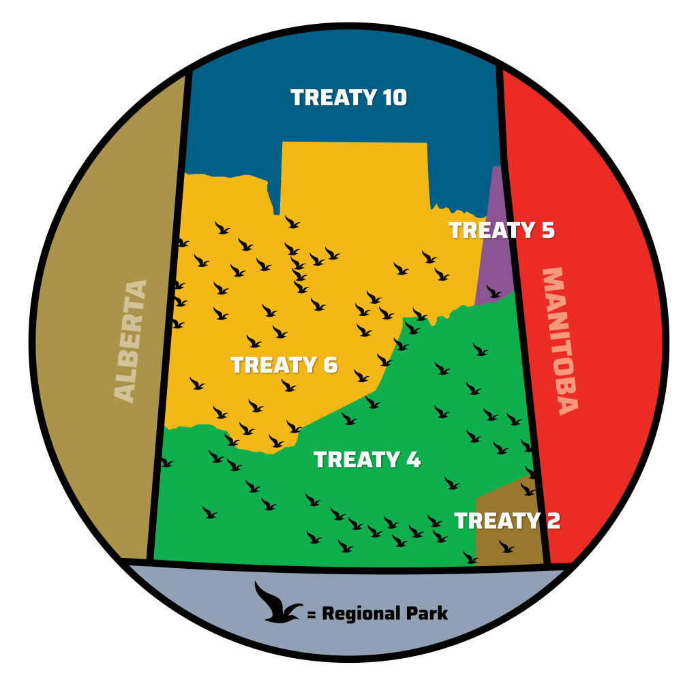

Location
Boundaries of Treaty 4
Treaty 4 covers most of Southern Saskatchewan and small parts of Western Manitoba and Eastern Alberta. It is bordered by Treaty 2 to the east, Treaty 5 to the northeast, Treaty 6 to the north, and Treaty 7 to the west.

Cities
These are some of the most populous cities located in Treaty 4:
| City | Population (2021 Census) |
|---|---|
| Regina | 263,500 |
| Moose Jaw | 32,000 |
| Swift Current | 17,213 |
| Yorkton | 16,280 |